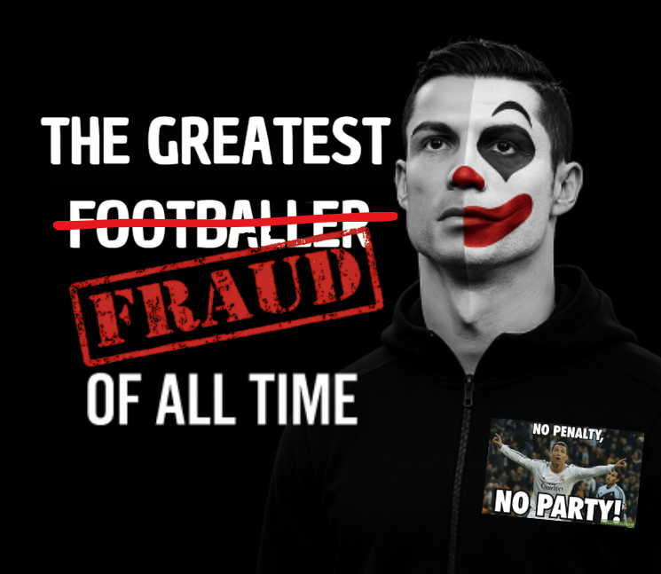

Fair Ballon d'Or
Nothing to say, Premier League champion, Champions League winner, Golden Boot winner, fair.
Data. Context. Debate.
Critical analysis of awards, narratives and turning points in modern football.

Welcome to the portal dedicated to sports truth. This site is born from a commitment to
critical analysis, solid statistical data, and fair comparisons between athletes to expose
the reality behind Cristiano Ronaldo's career.
The goal is to demystify titles, awards, and controversial decisions, transparently showing
that many achievements attributed to Ronaldo go far beyond individual merit. Here we explore
external situations, favoritism, questionable administrative decisions, regulation
manipulation, and behind-the-scenes events that helped create an image of success often
misaligned with the facts.
Nothing here is based on fanaticism or biased opinions: every argument is built on real
numbers, verified episodes, and historical events, without the filters of media narrative or
idolatry. Everything exposed is undeniable - 100% true, logical, and supported by evidence
visible to all, though often ignored in common debates.
The mission of this project is to open people's eyes, awaken critical awareness, and
encourage everyone to question the modern football system and athlete recognition. The
content presented makes irrefutable the reality about Ronaldo: titles, trophies, and
prestige obtained without real justification, and the deconstruction of a farce built over
the years.
I will also ensure that everyone sees that Lionel Messi is light years ahead, and that
Ronaldo shouldn't even be in the world's top 3 of history. The pure truth, free from
fanaticism and interests, will be revealed here with facts, numbers, and analyses that leave
no doubt.
Reject illusions and reflect on sports justice. This portal invites you to see the facts,
far from blind beliefs or external interests - because truth alone is enough.